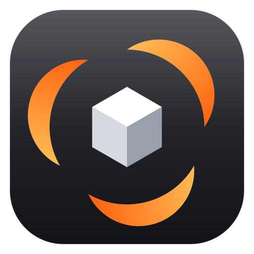

Retours des joueurs
Corrigé grâce à vous
Chaque correction qui vient d'un retour de joueur est listée ici, avec la version qui l'apporte. Merci à celles et ceux qui prennent le temps de signaler un problème.
Signalé par vous
| Version | Ce qui n'allait pas | Signalé par |
|---|---|---|
| mABBAJACK 2.0.2 | La clé d'API Nexus était refusée quand elle était collée avec des espaces, un retour à la ligne ou des guillemets. mABBAJACK la nettoie maintenant et dit pourquoi Nexus refuse une clé. | C0N0RH |
Trouvé en testant sur de vraies installations
| Version | Ce qui n'allait pas |
|---|---|
| mABBAJACK 2.0.3 | Fichiers du jeu déclarés manquants quand le jeu se trouve dans une autre bouteille CrossOver ; fichiers hébergés sur Nexus « Modding Tools » qui ne se téléchargeaient pas. |
| sKYCRASH 2.2.1 | La fiche d'installation pouvait montrer une autre installation que celle qui a planté ; fausse alerte « version du jeu différente de SKSE » ; champ de l'assistant non traduit. |
 mORTEX 2.0.2 | Version minimale de macOS alignée sur macOS 14 partout. |
Un souci sur votre Mac ?
Racontez-nous comment les outils tournent chez vous : modèle de Mac, version de macOS, bouteille CrossOver, ce qui a cassé.